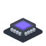
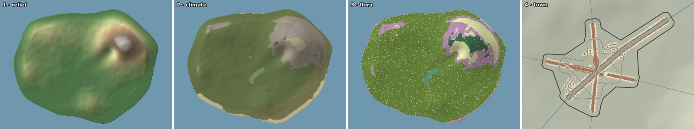

go-simulator brings scenes to life with simulations: the sun crossing the sky, boats sailing, towns growing for a century, forests spreading over an island.

Each kind of simulation is a separate small program, a plugin: terrain, climate, flora, towns, motion, or one you write. A rules file (plain text) says which plugins to use and with which numbers; go-simulator runs them together on one shared world, and shows it live in go-renderer’s viewer or writes the results to files.
Pick the line that sounds like you.
| If you… | Read | Time |
|---|---|---|
| are new and want to see a simulation running | 🏴☠️ The quest: a harbour that lives, in 6 levels | 60 min |
| want to understand how the pieces fit | How it fits together | 15 min |
| want to set up a simulation with existing plugins | Rules files and Running | — |
| want to write a plugin | Writing plugins | — |
| are looking up a name or a message | The reference | — |
The menu on the left (or the files in docs/) follows this order.
Start
Guides
Reference
Proposals
go.mod needs the
same replace during development.| Word | What it means |
|---|---|
| Terminal | The window where you type commands: Terminal on macOS and Linux, PowerShell on Windows. |
| Repository | A project’s folder of files, kept on GitHub. git clone <address> copies it to your computer. |
| Scene | Everything a 3D picture holds: ground, houses, trees, the sea, the sky and the sun. |
| Plugin | A small program that adds one ability to another: here, one kind of simulation each. |
| Rules file | A text file (YAML) that says which plugins to use, with which numbers, for how long: no programming needed. |
| Field | A grid of numbers laid over the world: the height of every spot, its temperature, its rain. |
| Quest | The tutorial of these docs: short levels, each ending with something that works and an achievement. |
go-simulator is one of a family of small projects that work together:
| Project | What it does |
|---|---|
| go-renderer | draws 3D scenes and flat interfaces |
| go-ui | buttons, panels and whole applications |
| go-ui-android | Android apps that look like Android’s own |
| go-sound | sound and music |
| go-scene-builder | 3D scenes from a flat map |
| go-simulator (this one) | simulations that change a scene |
| go-simulator-terrain | ground shaped by rivers |
| go-simulator-climate | weather and biomes |
| go-simulator-flora | forests that grow |
| go-simulator-urban | towns that grow |
| go-simulator-motion | a scene that moves |
| go-3ds | Go on the Nintendo 3DS |
⚠️ All of them are educational experiments, written with an AI assistant and pending review by their author: good for learning and playing, not for production.